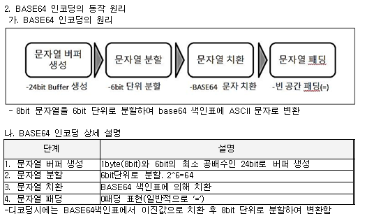
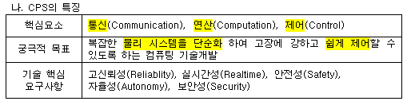

<script type = "text/javascript">
// varation
  var index=
  [0, 1, 2, 3, 4, 5,];
  var question =
  [
  'BASE64',
  'CPS',
  '시선통신기술', 
  'Thrashing',
  '앱접근성',
  '스마트계약',
  ];
  var answer = 
  [
  '# 정의 : 바이너리 데이터를 플랫폼 독립적인 64개의 ASCII 영역의 문자열로 변환하는 인코딩 <br/>\
  # 특징 <br/>\
  - Binary-Text Encoding <br/>\
  - 64개 ASCII 문자 사용 <br/>\
  - 6Bit 단위 치환 <br/>\
  <br/>\
  ',
  '대규모 센서/액츄에이터 가지는 physical요소,실시간 제어 컴퓨터 요소 결합 복합 시스템 <br/><br/>\
  <br/>\
  ',
  '# 정의 : 연결하고자 하는 대상의 식별번호를 몰라도 스마트폰 화면에 보이는 대상과 바로 연결해주는 통신 기술 <br/>\
  # 기술요소 <br/>\
  - 자가공간 필터링 : 10도 이내 자가 공간 인식 <br/>\
  - 객체 구분형 이미지 특성 매칭 : 객체 타입에 따른 이미지 특성 추출 <br/>\
  - 통신 대상 인식 프로토콜 : 10도 이내 대상 단말의 탐색 응답 수신 <br/>\
  - Wifi P2P 기반 시선 통신 프로토콜 : PAM(Pre-Association Messaging ; 사전 소용량 통신) <br/>\
  ',
  '멀티프로세싱, 멀티프로그래밍의 역기능으로 페이지 부재가 자주 일어나 프로세스가  실행시간 보다 페이지 교체에 보내는 시간이 더 많게 되는 현상<br/>\
  # 정의 : 빈번한 페이지 폴트가 발생하여 프로세스 수행시간보다 페이지 교체에 더 많은 시간을 소요하는 상태<br/>\
  # Thrashing 예방책 <br/>\
  1) Locality 활용 방안 <br/>\
  - Working Set : 동일 데이터 압축한 단위 <br/>\
  - PrePaging : 예측되는 Page 메모리에 미리 적재 <br/>\
  2) Page Fault 활용 방안 <br/>\
  - PFF(Page Fault Frequency) : 페이지 부재 비용의 상한, 하한을 둬서 프레임 개수 조절 <br/>\
  - 자원의 유휴량 확보 : 메모리 확장 <br/>\
  ',
  '장애인,고령자 등 사용자 차별없이 모바일 서비스 편리 이용할 수 있도록 공공기관 등이 모바일 어플리케이션 개발 시 준수해야 할 지침(국가정보화 기본법 32조 5항)<br/><br/>\
  # 정의 : 국가정보화 기본법 32조 5항에 따라 모바일 애플리케이션 서비스 제공자가 장애인과 고령자 등 접근서을 보장하기 위해 어플리케이션 제작시 지켜야할 사항을 규정한 지침.<br/>\
  # 필수사항 <br/>\
  - 대체 텍스트 제공 <br/>\
  - 초점 제공 (Tab order) <br/>\
  - 운영체제 접근성 기능 지원 : 타 모바일 기기 도움 받을 수 있게 호환 <br/>\
  - 누르기 동작 지원 <br/>\
  - 색에 무관한 인식 : 무늬, 패턴 함께 제공 <br/>\
  - 명도 대비 : 전경 배경색 구분 <br/>\
  - 자막 제공 <br/>\
  ',
  '분산원장시스템(Distributed ledger system)과 같은 컴퓨터 시스템에 의하여 자동으로 체결될 수 있는 기존 법률적 언어대신 컴퓨터 언어로 저장된 계약<br/>\
  블록체인을 통해 일정 조건을 만족시키면 거래가 자동으로 실행되도록 프로그램된계약<br/><br/>\
  # 정의 : 분산원장기술에서 일정 거래조건을 만족하면 당사자 간 거래가 자동 체결되는 블록체인 2.0의 핵심기술로써 금융거래, 부동산 계약, 공증 등 다양한 형태의 계약을 체결하고 이행하는 기술 <br/>\
  # 스마트 계약 원칙 <br/>\
  - 관측 가능성 : 서로 관찰하거나 입증할 수 있어야 함. <br/>\
  - 검증 가능성 : 특이사항 공표 <br/>\
  - 사생활 보호 <br/>\
  - 강제 가능성 : 계약 구속력 <br/>\
  ',
  ];
  var current;
  var bInit = 0;

// function 
  function next()
  {
    if ( bInit != 0 )
    {
      index.splice( current, 1);
      question.splice( current, 1);
      answer.splice( current, 1);
    }
    else
    {
      bInit = 1;
    }

    if( index.length == 0 )
    {
      alert("All question resolved!");
    }
    else
    {
      drawScreen()
    }
  }

  function getAnswer()
  {
    document.write('Answer : <br/>' + answer[current] + '<br/><br/>');
  }

  function drawScreen()
  {
    document.body.innerHTML = "";
    document.write('** [Month TEST] Memorization Note 1 **' + '<br /><br />');
    document.write('<button id="next" onclick="next();">Next</button>' + ' ');
    document.write('<button id="answer" onclick="getAnswer();">Answer</button>' + '<br /><br />');

    document.write( 'Left Questions : ' + index.length + '<br /><br />');
    current = Math.floor(Math.random() * index.length)
    document.write( 'Question : ' + question[current] + '<br /><br />');
  }

  document.write('<head> <meta name="viewport" content="width=device-width, initial-scale=1.0, user-scalable=no, maximum-scale=1.0, minimum-scale=1.0" </head>');
  document.write('** [Month TEST] Memorization Note 1 **' + '<br /><br />');
  document.write('<button id="next" onclick="next();">Next</button>');

</script>
